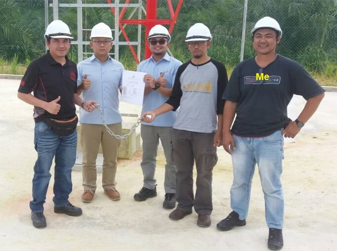

About Me
I previously worked as a Site Manager at a Construction Company handling projects for Malaysian Communication and Multimedia Commision. We construct Telecommunications Towers all over the State of Sabah. I am a commited and strong will and very determine person, who is always trying to get things done ahead of a given schedule. When the stress is over, i'm the type of guy who like to listen to music and spend some time to improve myself.

Basic Information
Age: 47
Email: quartno74@yahoo.com
Phone: 014-9566-449
Address: Country Height Apartment, Jalan Minintod, 88200, Kota Kinabalu, Sabah
Language: Bahasa Malaysia, English and Kadazan